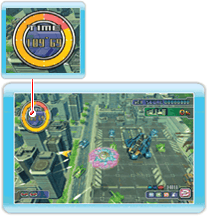

6 |
Introducción al juego |
 |
En “SPACE INVADERS GET EVEN” llevarás un ovni para invadir la Tierra. Controla a tus compañeros Invasores y haz que destruyan los tanques de los humanos, sus máquinas militares, sus ciudadelas y sus armas secretas. Compite contra jugadores de todo el mundo y demuestra que eres el mejor invasor registrando tus mejores tiempos en la clasificación por medio de la Conexión Wi-Fi de Nintendo. El juego original consta de tres áreas. Si quieres jugar otras misiones puedes comprar los “paquetes de misiones” que te interesen.
|
| Reglas del juego | ||
Los ovnis no pueden estar mucho rato en el cielo tan contaminado de la Tierra. Debes poner atención a cuánto tiempo te queda (en la esquina superior izquierda de la pantalla) cuando estés invadiendo un área. Si se te termina el tiempo, morirás a causa de la terrible polución y el juego se habrá terminado. |
| Perder y ganar tiempo | ||

Cada vez que tu ovni reciba daño, perderás tiempo. Si quieres recuperarlo deberás destruir armas humanas y edificios. La cantidad de tiempo que ganes o pierdas dependerá del tipo de enemigo y del ataque que se realice. |
| Perder y ganar Invasores | ||
 Si te atacan mientras estás rodeado de Invasores, estos recibirán el daño por ti. Si no tienes suficientes Invasores para atacar, mueve rápidamente el mando de Wii y el Nunchuk y recuperarás unos cuantos. Puedes repetir este movimiento tantas veces como consideres necesario, pero ten en cuenta que mientras recuperas Invasores, no podrás moverte y perderás preciosos segundos que podrían ser vitales en tu destrucción. Si te atacan mientras estás rodeado de Invasores, estos recibirán el daño por ti. Si no tienes suficientes Invasores para atacar, mueve rápidamente el mando de Wii y el Nunchuk y recuperarás unos cuantos. Puedes repetir este movimiento tantas veces como consideres necesario, pero ten en cuenta que mientras recuperas Invasores, no podrás moverte y perderás preciosos segundos que podrían ser vitales en tu destrucción. |
 |
 |
 |